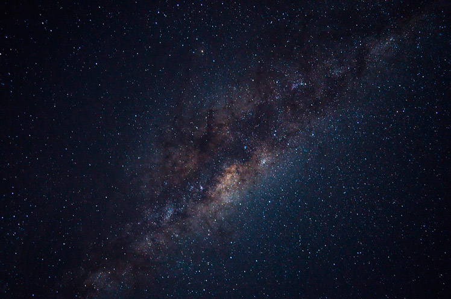

| Supernova | Eclipse Solar | Eclipse Lunar | Agujero Negro | NASA |
¿Qué es?El Sistema Solar es un conjunto formado por el Sol y los cuerpos celestes que orbitan a su alrededor. Está formado por el Sol y una serie de cuerpos que están ligados con esta estrella por la gravedad: ocho grandes planetas (Mercurio, Venus, Tierra, Marte, Júpiter, Saturno, Urano y Neptuno), junto con sus satélites, planetas menores (entre ellos, el ex-planeta Plutón), asteroides, cometas, polvo y gas interestelar. Pertenece a la galaxia llamada Vía Láctea, formada por miles de millones de estrellas, situadas a lo largo de un disco plano de 100.000 años luz. |
¿Dónde está el sistema solar?En el universo hay millones de galaxias. Una de ellas es la que conocemos comoVía Láctea. La Vía Láctea, formada por estrellas, polvo y gas, tiene forma de espiral. Podría decirse que suaspecto es algo así como un remolino con varios brazos; pues bien, en uno de ellos, el llamado brazo de Orión, se encuentra el Sistema Solar. ¿Cuándo se formó el sistema solar?Lo cierto es que hace tanto tiempo que es muy difícil saber este dato con seguridad, pero se cree que fue hace… ¡4.5 MIL MILLONES DE AÑOS! Si lo piensas bien te darás cuenta de que estamos hablando de un espacio temporal impactante y que nos resulta difícil de imaginar. |